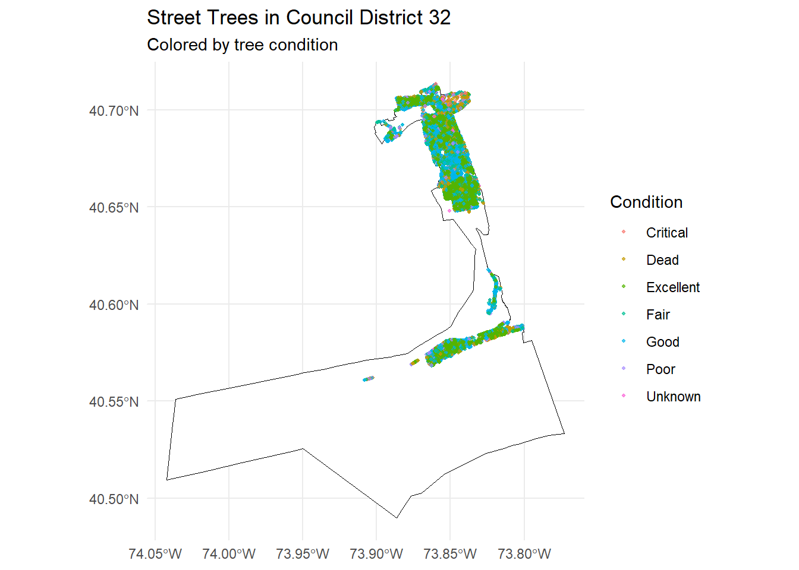
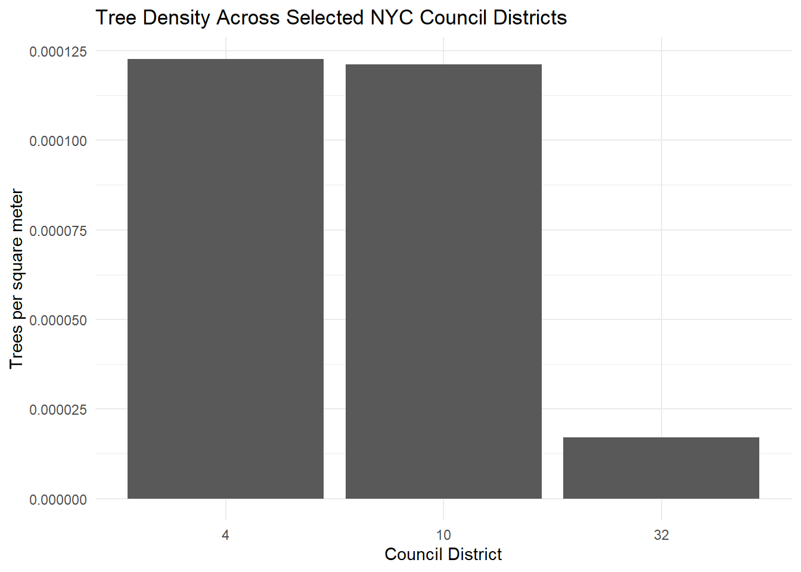
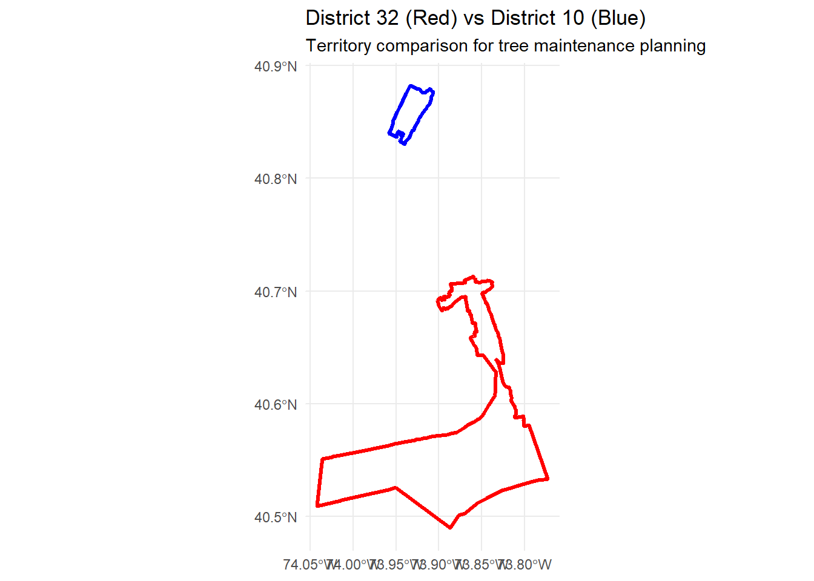

library(sf)
library(tidyverse)
get_council_districts <- function() {
dir_path <- "data/mp03"
# Search for any .shp file inside mp03 (recursively)
shp_files <- list.files(dir_path, pattern = "\\.shp$", full.names = TRUE, recursive = TRUE)
if (length(shp_files) == 0) {
stop("No .shp file found in data/mp03. Make sure you manually extracted the shapefile there.")
}
shp_file <- shp_files[1] # take the first shapefile found
message("Reading shapefile: ", shp_file)
districts_raw <- sf::st_read(shp_file, quiet = TRUE)
districts <- sf::st_transform(districts_raw, crs = "WGS84")
return(districts)
}
# ▶️ CALL FUNCTION *here*, NOT inside the function
council_dists <- get_council_districts()Reading shapefile: data/mp03/nyccwi.shplibrary(httr2)
get_tree_points <- function(limit = 50000) {
dir_path <- "data/mp03"
if (!dir.exists(dir_path)) {
dir.create(dir_path, recursive = TRUE)
}
base_url <- "https://data.cityofnewyork.us/resource/hn5i-inap.geojson"
all_files <- c()
offset <- 0
keep_going <- TRUE
while (keep_going) {
file_name <- sprintf("trees_%06d.geojson", offset)
file_path <- file.path(dir_path, file_name)
if (!file.exists(file_path)) {
req <- request(base_url) |>
req_url_query(`$limit` = limit, `$offset` = offset)
resp <- req_perform(req)
out_con <- file(file_path, open = "wb")
writeBin(resp_body_raw(resp), out_con)
close(out_con)
}
all_files <- c(all_files, file_path)
tmp <- st_read(file_path, quiet = TRUE)
n_rows <- nrow(tmp)
if (n_rows < limit) {
keep_going <- FALSE
} else {
offset <- offset + limit
}
}
trees_list <- lapply(all_files, st_read, quiet = TRUE)
trees <- bind_rows(trees_list)
trees
}
trees_sf <- get_tree_points()
set.seed(123)
trees_small <- trees_sf |> dplyr::slice_sample(prop = 0.02)
ggplot() +
geom_sf(data = council_dists, fill = NA, color = "grey40", linewidth = 0.3) +
geom_sf(data = trees_small, alpha = 0.1, size = 0.1, color = "darkgreen") +
theme_minimal()
names(council_dists)[1] "CounDist" "Shape_Leng" "Shape_Area" "geometry" dists_small <- council_dists |>
dplyr::select(CounDist, Shape_Area, geometry)
# Spatial join: attach district info to each tree
trees_with_district <- sf::st_join(
trees_sf,
dists_small,
join = sf::st_intersects,
left = TRUE
)
# Quick sanity check
trees_with_districtSimple feature collection with 1094587 features and 15 fields
Geometry type: POINT
Dimension: XY
Bounding box: xmin: -74.25499 ymin: 40.49668 xmax: -73.69808 ymax: 40.91419
Geodetic CRS: WGS 84
First 10 features:
tpcondition stumpdiameter riskratingdate riskrating objectid
1 Excellent <NA> <NA> <NA> 86823
2 Good <NA> <NA> <NA> 87623
3 Poor <NA> <NA> <NA> 88023
4 Fair <NA> 2024-06-28 12:41:55 6 88823
5 Dead <NA> <NA> <NA> 88824
6 Fair <NA> <NA> <NA> 88825
7 Critical <NA> <NA> <NA> 89223
8 Dead <NA> <NA> <NA> 89225
9 Unknown <NA> <NA> <NA> 89625
10 Fair <NA> <NA> <NA> 89626
globalid tpstructure
1 2B457A4C-E0E4-4E17-81C4-A5449F51C804 Full
2 37195E1A-A7EE-4AA4-8389-19A0ED5C46F7 Retired
3 6BA8E72B-1901-4EF3-ABFF-D11680AB4A9B Retired
4 79A5DBAF-F305-4DA1-A4B1-7A8C8D085435 Full
5 182F6647-D9C1-4A45-ADA0-9ADEFD1ECC60 Retired
6 394AEC59-B91C-45AD-93FB-2996B0C09747 Retired
7 8717EC83-F165-495A-A1AA-1064173A681F Retired
8 FD617E56-130C-4E43-A76D-3AF989E37A2F Retired
9 380AB840-F0E9-4B14-A4D6-A99B8861065E Retired
10 8A487A6B-146A-4DE4-9AEE-835492B1E348 Retired
plantingspaceglobalid createddate dbh planteddate
1 E814CD37-9F53-4D79-AF86-3B454F9D29B9 2015-02-28 05:00:00 20 <NA>
2 A644AB79-A3CB-4F7F-923B-F308E615CCD4 2015-03-03 05:00:00 10 <NA>
3 21431016-EDB8-4A0B-B122-673125800C87 2015-03-03 05:00:00 24 <NA>
4 96FB6C55-612F-466D-9449-85A3CD2178E1 2015-03-04 05:00:00 10 <NA>
5 4796B64F-906C-4345-A4E9-5CD6133642F8 2015-03-04 05:00:00 10 <NA>
6 F31930BA-47FD-4D9F-B8A2-7A4FA4707D16 2015-03-04 05:00:00 19 <NA>
7 ED1D6BF0-C0E7-49BB-9A1A-85CBF8558ACD 2015-03-04 05:00:00 12 <NA>
8 6AC474F7-0D16-43EC-A1F9-8C9B6C14F434 2015-03-04 05:00:00 8 <NA>
9 8E628B41-0A1D-4948-AAE3-F0B3A2A8AFE8 2015-03-04 05:00:00 6 <NA>
10 C6526419-CD64-4D8D-9288-C7967124B9B4 2015-03-04 05:00:00 15 <NA>
updateddate
1 2016-10-20 17:43:53
2 2019-09-18 13:12:55
3 2018-03-27 14:00:42
4 2024-06-28 12:41:55
5 2016-10-24 02:50:43
6 2017-04-12 09:35:50
7 2020-01-08 16:27:00
8 2017-09-11 08:51:17
9 2016-12-28 12:18:15
10 2023-12-11 18:01:07
genusspecies CounDist
1 Acer nigrum - black maple 24
2 Fraxinus pennsylvanica - Green ash 9
3 Acer platanoides - Norway maple 12
4 Pyrus calleryana - Callery pear 51
5 Gleditsia triacanthos var. inermis - Thornless honeylocust 2
6 Fraxinus americana - white ash 23
7 Zelkova serrata - Japanese zelkova 7
8 Acer platanoides - Norway maple 49
9 Tilia cordata - littleleaf linden 7
10 Abies alba - silver fir 32
Shape_Area geometry
1 186824791 POINT (-73.81657 40.71629)
2 61792463 POINT (-73.93848 40.81299)
3 131040795 POINT (-73.83244 40.88763)
4 1326829378 POINT (-74.20904 40.51958)
5 57068955 POINT (-73.98032 40.74291)
6 311520683 POINT (-73.73589 40.7359)
7 87149990 POINT (-73.96597 40.79516)
8 442729636 POINT (-74.13088 40.60673)
9 87149990 POINT (-73.96474 40.80428)
10 1773673447 POINT (-73.85288 40.67823)trees_by_dist <- trees_with_district |>
sf::st_drop_geometry() |>
dplyr::group_by(CounDist) |>
dplyr::summarise(
n_trees = dplyr::n(),
.groups = "drop"
) |>
dplyr::arrange(dplyr::desc(n_trees))
# Top district by count
trees_by_dist |> dplyr::slice(1)# A tibble: 1 × 2
CounDist n_trees
<int> <int>
1 51 70966trees_density <- trees_by_dist |>
dplyr::left_join(
council_dists |>
sf::st_drop_geometry() |>
dplyr::select(CounDist, Shape_Area),
by = "CounDist"
) |>
dplyr::mutate(tree_density = n_trees / Shape_Area) |>
dplyr::arrange(dplyr::desc(tree_density))
# District with highest tree density
trees_density |> dplyr::slice(1)# A tibble: 1 × 4
CounDist n_trees Shape_Area tree_density
<int> <int> <dbl> <dbl>
1 39 32403 118294552. 0.000274names(trees_with_district) [1] "tpcondition" "stumpdiameter" "riskratingdate"
[4] "riskrating" "objectid" "globalid"
[7] "tpstructure" "plantingspaceglobalid" "createddate"
[10] "dbh" "planteddate" "updateddate"
[13] "genusspecies" "CounDist" "Shape_Area"
[16] "geometry" colnames(trees_sf) [1] "tpcondition" "stumpdiameter" "riskratingdate"
[4] "riskrating" "objectid" "globalid"
[7] "tpstructure" "plantingspaceglobalid" "createddate"
[10] "dbh" "planteddate" "updateddate"
[13] "genusspecies" "geometry" names(trees_sf) [1] "tpcondition" "stumpdiameter" "riskratingdate"
[4] "riskrating" "objectid" "globalid"
[7] "tpstructure" "plantingspaceglobalid" "createddate"
[10] "dbh" "planteddate" "updateddate"
[13] "genusspecies" "geometry" names(council_dists)[1] "CounDist" "Shape_Leng" "Shape_Area" "geometry" # Keep only relevant district columns
dists_small <- council_dists |>
dplyr::select(CounDist, Shape_Area, geometry)
# Spatial join: district info onto each tree
trees_with_district <- sf::st_join(
trees_sf,
dists_small,
join = sf::st_intersects,
left = TRUE
)
trees_with_districtSimple feature collection with 1094587 features and 15 fields
Geometry type: POINT
Dimension: XY
Bounding box: xmin: -74.25499 ymin: 40.49668 xmax: -73.69808 ymax: 40.91419
Geodetic CRS: WGS 84
First 10 features:
tpcondition stumpdiameter riskratingdate riskrating objectid
1 Excellent <NA> <NA> <NA> 86823
2 Good <NA> <NA> <NA> 87623
3 Poor <NA> <NA> <NA> 88023
4 Fair <NA> 2024-06-28 12:41:55 6 88823
5 Dead <NA> <NA> <NA> 88824
6 Fair <NA> <NA> <NA> 88825
7 Critical <NA> <NA> <NA> 89223
8 Dead <NA> <NA> <NA> 89225
9 Unknown <NA> <NA> <NA> 89625
10 Fair <NA> <NA> <NA> 89626
globalid tpstructure
1 2B457A4C-E0E4-4E17-81C4-A5449F51C804 Full
2 37195E1A-A7EE-4AA4-8389-19A0ED5C46F7 Retired
3 6BA8E72B-1901-4EF3-ABFF-D11680AB4A9B Retired
4 79A5DBAF-F305-4DA1-A4B1-7A8C8D085435 Full
5 182F6647-D9C1-4A45-ADA0-9ADEFD1ECC60 Retired
6 394AEC59-B91C-45AD-93FB-2996B0C09747 Retired
7 8717EC83-F165-495A-A1AA-1064173A681F Retired
8 FD617E56-130C-4E43-A76D-3AF989E37A2F Retired
9 380AB840-F0E9-4B14-A4D6-A99B8861065E Retired
10 8A487A6B-146A-4DE4-9AEE-835492B1E348 Retired
plantingspaceglobalid createddate dbh planteddate
1 E814CD37-9F53-4D79-AF86-3B454F9D29B9 2015-02-28 05:00:00 20 <NA>
2 A644AB79-A3CB-4F7F-923B-F308E615CCD4 2015-03-03 05:00:00 10 <NA>
3 21431016-EDB8-4A0B-B122-673125800C87 2015-03-03 05:00:00 24 <NA>
4 96FB6C55-612F-466D-9449-85A3CD2178E1 2015-03-04 05:00:00 10 <NA>
5 4796B64F-906C-4345-A4E9-5CD6133642F8 2015-03-04 05:00:00 10 <NA>
6 F31930BA-47FD-4D9F-B8A2-7A4FA4707D16 2015-03-04 05:00:00 19 <NA>
7 ED1D6BF0-C0E7-49BB-9A1A-85CBF8558ACD 2015-03-04 05:00:00 12 <NA>
8 6AC474F7-0D16-43EC-A1F9-8C9B6C14F434 2015-03-04 05:00:00 8 <NA>
9 8E628B41-0A1D-4948-AAE3-F0B3A2A8AFE8 2015-03-04 05:00:00 6 <NA>
10 C6526419-CD64-4D8D-9288-C7967124B9B4 2015-03-04 05:00:00 15 <NA>
updateddate
1 2016-10-20 17:43:53
2 2019-09-18 13:12:55
3 2018-03-27 14:00:42
4 2024-06-28 12:41:55
5 2016-10-24 02:50:43
6 2017-04-12 09:35:50
7 2020-01-08 16:27:00
8 2017-09-11 08:51:17
9 2016-12-28 12:18:15
10 2023-12-11 18:01:07
genusspecies CounDist
1 Acer nigrum - black maple 24
2 Fraxinus pennsylvanica - Green ash 9
3 Acer platanoides - Norway maple 12
4 Pyrus calleryana - Callery pear 51
5 Gleditsia triacanthos var. inermis - Thornless honeylocust 2
6 Fraxinus americana - white ash 23
7 Zelkova serrata - Japanese zelkova 7
8 Acer platanoides - Norway maple 49
9 Tilia cordata - littleleaf linden 7
10 Abies alba - silver fir 32
Shape_Area geometry
1 186824791 POINT (-73.81657 40.71629)
2 61792463 POINT (-73.93848 40.81299)
3 131040795 POINT (-73.83244 40.88763)
4 1326829378 POINT (-74.20904 40.51958)
5 57068955 POINT (-73.98032 40.74291)
6 311520683 POINT (-73.73589 40.7359)
7 87149990 POINT (-73.96597 40.79516)
8 442729636 POINT (-74.13088 40.60673)
9 87149990 POINT (-73.96474 40.80428)
10 1773673447 POINT (-73.85288 40.67823)# District with most trees
trees_by_dist <- trees_with_district |>
sf::st_drop_geometry() |>
dplyr::group_by(CounDist) |>
dplyr::summarise(
n_trees = dplyr::n(),
.groups = "drop"
) |>
dplyr::arrange(dplyr::desc(n_trees))
# Top district by total trees
trees_by_dist |> dplyr::slice(1)# A tibble: 1 × 2
CounDist n_trees
<int> <int>
1 51 70966# District with highest tree density (trees per unit area)
trees_density <- trees_by_dist |>
dplyr::left_join(
council_dists |>
sf::st_drop_geometry() |>
dplyr::select(CounDist, Shape_Area),
by = "CounDist"
) |>
dplyr::mutate(tree_density = n_trees / Shape_Area) |>
dplyr::arrange(dplyr::desc(tree_density))
# Top district by density
trees_density |> dplyr::slice(1)# A tibble: 1 × 4
CounDist n_trees Shape_Area tree_density
<int> <int> <dbl> <dbl>
1 39 32403 118294552. 0.000274trees_sf |>
sf::st_drop_geometry() |>
dplyr::count(tpcondition) tpcondition n
1 Critical 6268
2 Dead 120587
3 Excellent 100525
4 Fair 305366
5 Good 483171
6 Poor 47281
7 Unknown 31381
8 <NA> 8dead_by_dist <- trees_with_district |>
sf::st_drop_geometry() |>
dplyr::group_by(CounDist) |>
dplyr::summarise(
n_trees = dplyr::n(),
n_dead = sum(tpcondition == "Dead", na.rm = TRUE),
frac_dead = n_dead / n_trees,
.groups = "drop"
) |>
dplyr::arrange(dplyr::desc(frac_dead))
# District with highest fraction dead
dead_by_dist |> dplyr::slice(1)# A tibble: 1 × 4
CounDist n_trees n_dead frac_dead
<int> <int> <int> <dbl>
1 32 30270 4315 0.143# Add borough based on CounDist ranges
trees_borough <- trees_with_district |>
dplyr::mutate(
borough = dplyr::case_when(
CounDist >= 1 & CounDist <= 10 ~ "Manhattan",
CounDist >= 11 & CounDist <= 18 ~ "Bronx",
CounDist >= 19 & CounDist <= 32 ~ "Queens",
CounDist >= 33 & CounDist <= 48 ~ "Brooklyn",
CounDist >= 49 & CounDist <= 51 ~ "Staten Island",
TRUE ~ NA_character_
)
)
# Most common species in Manhattan (use genusspecies column)
manhattan_species <- trees_borough |>
dplyr::filter(borough == "Manhattan") |>
sf::st_drop_geometry() |>
dplyr::count(genusspecies, sort = TRUE)
# Top species
manhattan_species |> dplyr::slice(1) genusspecies n
1 Gleditsia triacanthos var. inermis - Thornless honeylocust 17310new_st_point <- function(lat, lon){
sf::st_sfc(sf::st_point(c(lon, lat))) |>
sf::st_set_crs("WGS84")
}
# Approx coords for Baruch College
baruch_point <- new_st_point(lat = 40.7403, lon = -73.9836)
trees_with_distance <- trees_sf |>
dplyr::mutate(distance = sf::st_distance(geometry, baruch_point))
closest_tree <- trees_with_distance |>
dplyr::slice_min(distance, n = 1)
# Species of the closest tree (again, genusspecies)
closest_tree$genusspecies[1] "Pyrus calleryana - Callery pear"trees_with_district <- sf::st_join(
trees_sf,
council_dists |> dplyr::select(CounDist, Shape_Area),
join = sf::st_intersects,
left = TRUE
)
# District-level summary: count, dead fraction, density
dist_summary <- trees_with_district |>
sf::st_drop_geometry() |>
dplyr::group_by(CounDist) |>
dplyr::summarise(
n_trees = dplyr::n(),
n_dead = sum(tpcondition == "Dead", na.rm = TRUE),
frac_dead = n_dead / n_trees,
.groups = "drop"
) |>
dplyr::left_join(
council_dists |> sf::st_drop_geometry() |> dplyr::select(CounDist, Shape_Area),
by = "CounDist"
) |>
dplyr::mutate(tree_density = n_trees / Shape_Area)
dist_summary |> dplyr::arrange(dplyr::desc(frac_dead)) |> head()# A tibble: 6 × 6
CounDist n_trees n_dead frac_dead Shape_Area tree_density
<int> <int> <int> <dbl> <dbl> <dbl>
1 32 30270 4315 0.143 1773673447. 0.0000171
2 30 23012 3231 0.140 168917281. 0.000136
3 2 11563 1576 0.136 57068955. 0.000203
4 50 52500 7087 0.135 1138253876. 0.0000461
5 29 19994 2688 0.134 127849353. 0.000156
6 16 13497 1782 0.132 62280004. 0.000217 # Option A: data-driven choice – highest fraction of dead trees
my_dist <- dist_summary |>
dplyr::arrange(dplyr::desc(frac_dead)) |>
dplyr::slice(1) |>
dplyr::pull(CounDist)
my_dist[1] 32my_dist_poly <- council_dists |>
dplyr::filter(CounDist == my_dist)
my_dist_trees <- trees_with_district |>
dplyr::filter(CounDist == my_dist)
ggplot() +
geom_sf(data = my_dist_poly, fill = "white", color = "black") +
geom_sf(
data = my_dist_trees,
aes(color = tpcondition),
size = 0.7,
alpha = 0.7
) +
coord_sf(
xlim = sf::st_bbox(my_dist_poly)[c("xmin", "xmax")],
ylim = sf::st_bbox(my_dist_poly)[c("ymin", "ymax")]
) +
labs(
title = paste("Street Trees in Council District", my_dist),
subtitle = "Colored by tree condition",
color = "Condition"
) +
theme_minimal()
# Choose comparison districts (you can change these)
comp_dists <- c(my_dist, 4, 10, 32)
density_subset <- dist_summary |>
dplyr::filter(CounDist %in% comp_dists)
ggplot(density_subset,
aes(x = factor(CounDist), y = tree_density)) +
geom_col() +
labs(
x = "Council District",
y = "Trees per square meter",
title = "Tree Density Across Selected NYC Council Districts"
) +
theme_minimal()
dead_subset <- dist_summary |>
dplyr::filter(CounDist %in% comp_dists)
ggplot(dead_subset,
aes(x = factor(CounDist), y = frac_dead)) +
geom_col() +
labs(
x = "Council District",
y = "Fraction of trees recorded as Dead",
title = "Dead Tree Fraction in Selected Districts"
) +
theme_minimal()
my_stats <- dist_summary |>
dplyr::filter(CounDist == my_dist)
my_stats# A tibble: 1 × 6
CounDist n_trees n_dead frac_dead Shape_Area tree_density
<int> <int> <int> <dbl> <dbl> <dbl>
1 32 30270 4315 0.143 1773673447. 0.0000171my_dist <- 32 # choose District 32 (or any other you want)
# Filter district polygon
my_dist_poly <- council_dists |>
dplyr::filter(CounDist == my_dist)
# Filter trees inside the district
my_dist_trees <- trees_with_district |>
dplyr::filter(CounDist == my_dist)
# Zoomed-in map
ggplot() +
geom_sf(data = my_dist_poly, fill = "white", color = "black") +
geom_sf(data = my_dist_trees, aes(color = tpcondition),
size = 0.7, alpha = 0.7) +
coord_sf(
xlim = sf::st_bbox(my_dist_poly)[c("xmin", "xmax")],
ylim = sf::st_bbox(my_dist_poly)[c("ymin", "ymax")]
) +
scale_color_manual(values = c(
"Excellent" = "#1b7837",
"Good" = "#7fbf7b",
"Fair" = "#d9f0d3",
"Poor" = "#fddbc7",
"Critical" = "#b2182b",
"Dead" = "black",
"Unknown" = "grey70"
)) +
labs(
title = paste0("Street Trees in Council District ", my_dist),
subtitle = "Colored by tree condition",
color = "Condition"
) +
theme_minimal()comp_dists <- c(my_dist, 39, 51, 4) # You can change these
dead_comp <- dead_by_dist |>
dplyr::filter(CounDist %in% comp_dists)
# Bar chart comparison
ggplot(dead_comp, aes(x = factor(CounDist), y = frac_dead)) +
geom_col(fill = "firebrick") +
labs(
title = "Fraction of Dead Trees Across Districts",
x = "Council District",
y = "Fraction Dead"
) +
theme_minimal()
other_dist <- 10 # pick a contrast district
other_poly <- council_dists |> filter(CounDist == other_dist)
other_trees <- trees_with_district |> filter(CounDist == other_dist)
# Two-district comparison plot
ggplot() +
geom_sf(data = my_dist_poly, fill = NA, color = "red", size = 1.2) +
geom_sf(data = other_poly, fill = NA, color = "blue", size = 1.2) +
labs(
title = paste("District", my_dist, "(Red) vs District", other_dist, "(Blue)"),
subtitle = "Territory comparison for tree maintenance planning"
) +
theme_minimal()